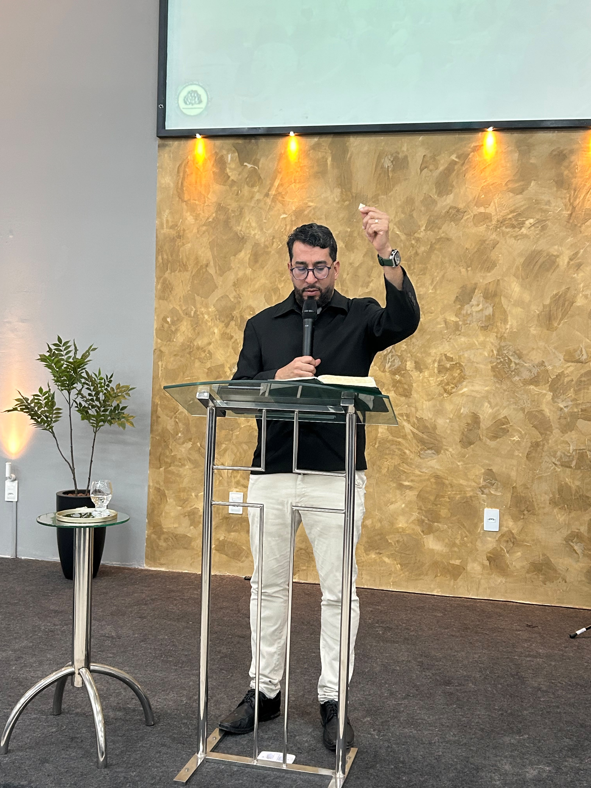
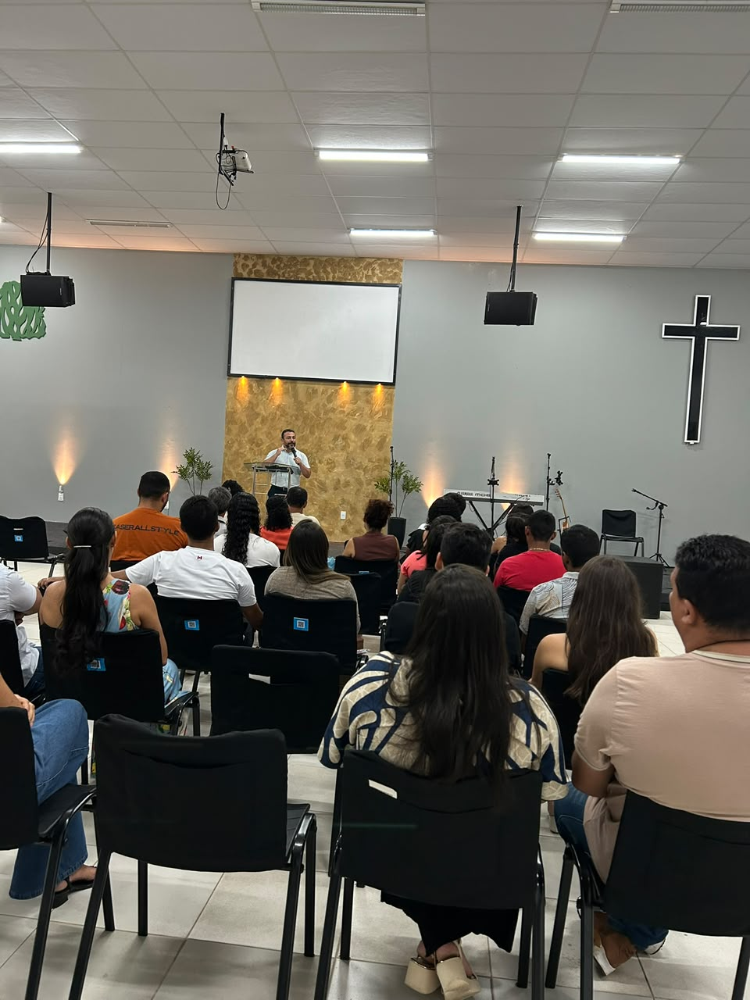
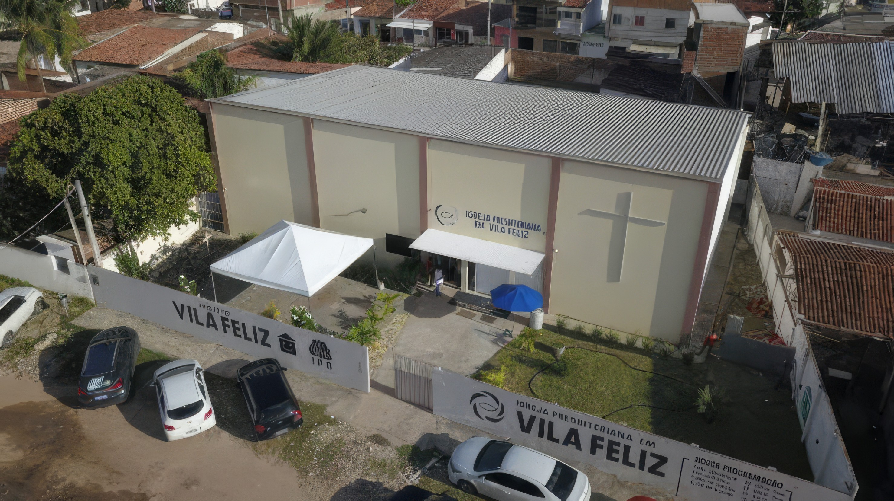

Igreja Presbiteriana de Vila Feliz
Somos uma igreja de fé reformada, comprometida com a Palavra e aberta para acolher você e sua família em cada etapa da caminhada cristã.

Quem Somos
Cada culto é um convite para se aproximar de Deus e da comunidade.
Na Igreja Presbiteriana de Vila Feliz, cremos que a fé se vive em comunhão. Nossos encontros são marcados pela pregação fiel da Palavra, pela música que exalta a Deus e por relacionamentos que acolhem cada pessoa como parte da família. Seja qual for a sua caminhada, há um lugar reservado para você aqui.
SAIBA MAIS SOBRE NOSSA IGREJACultos
Clique na imagem para ver mais informações
No domingo, nos reunimos para adorar a Deus, ouvir a Sua Palavra e fortalecer nossa comunhão como igreja. Pela manhã e à noite, temos momentos de culto para juntos celebrarmos a fé em Jesus Cristo e crescermos na caminhada cristã.
Um momento dedicado ao estudo da Palavra de Deus, buscando compreender as Escrituras e crescer no conhecimento e na prática da fé cristã.
Um momento de comunhão e oração, em que nos reunimos para buscar a Deus, apresentar nossas necessidades e interceder uns pelos outros.
Ministérios
Anunciamos o Evangelho de Jesus Cristo e buscamos levar a mensagem de esperança e transformação à nossa comunidade.
Promovemos o ensino da Palavra de Deus, incentivando o conhecimento das Escrituras e o crescimento na fé.
Criamos momentos de convivência, cuidado e fortalecimento dos relacionamentos, vivendo a fé em comunidade.
Buscamos contribuir para o desenvolvimento integral de crianças, jovens e famílias por meio de iniciativas educacionais e formativas, incluindo aulas de inglês, judô, apoio escolar e outras atividades.
Procuramos servir às pessoas de forma integral, oferecendo apoio e desenvolvendo ações que atendam às necessidades da comunidade.
Colocamos nossa fé em prática por meio do serviço, procurando estar presentes na comunidade e contribuir para o bem das pessoas e famílias.

No nosso canal do YouTube você acompanha os cultos, mensagens e testemunhos da Igreja Presbiteriana em Vila Feliz. É uma forma de estar mais perto da nossa comunidade, mesmo à distância, e caminhar conosco na fé, ainda que não possa estar presente pessoalmente.
Acessar Canal
Vila Feliz - R. Mangue Branco - Jacaré, Cabedelo - PB, 58106-134
Telefone: (11) 99999-9999
Email: igreja@presbiteriana.com
WhatsApp: (11) 99999-9999